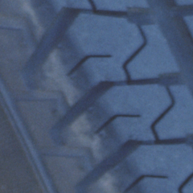
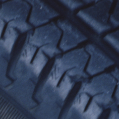

スポーツ走行のページのコース図 を参照して説明を読んでください．
当日の 報告と，あくまで現時点で考えていることを記録します．レベルが上がるに従っ て考察の内容が変わる様子を後で見るのも面白いと思うからです．
11/7 午前，午後のジムカーナクラスで走行してきました．当日は晴れで，暑 いぐらいになりました．09:30 開始なのに 08:15 ぐらいに到着しました． それよりさらに早く到着していた前田君(AE92,AT)の隣のピットに車を止め， 西山氏(サニーカリフォルニア,AT)が来るのを待ちました． 他のピットには競技車然とした車がならび，何やら作業をしています．こちら は積んでいる荷物を下ろすだけ．タイヤも標準装着のロードタイヤ，ブリジス トン RE010 です．もう 1 分山，という程度です．なんとかスタッドレス装着ま でもってくれればいいのですが．しばらくして無事ピットの空いている時間 に西山氏も到着し，走行券を購入，いざ走行となりました．初めてなので他人 のタイムを参考にして，目標タイムは 1 分 5 秒ぐらいと考えていました．
バリバリの競技車の中に並ぶのは緊張します．初めてのコースだし，回りに迷 惑をかけないか心配でした．記念すべき第 1 走は直線からの複合コーナーで いきなりのコースアウト．ここはダートが広いので思う存分コースアウトでき ます．これを見て係員は次車のスタートを遅らせたことでしょう．思ったより車 が回り込むのでセンターデフをロック状態で走るほうが速いと判断しました． 長い直線は 3 速でめいっぱい加速しますが，それ以外はコーナーの直前で 2 速が吹け切るタイミングのところが多く操作が難しいです．一般的なことです がブレーキをほどよく残しながら曲がらなければまともに走れない所が多いの に気がつきました．特に直線手前と後のコーナー，ヘアピンなどです．
走り終わるとピットに戻らずにすぐ列に並ぶ，というのを繰り返すとオートモー ドにしていたインタークーラーウォータースプレーの水が 3 本目でなくなり ます．このペースなら純正の水温計はまったく動きません．ただ，特にリアの タイヤのグリップが弱くなり，センターデフをロックしても車が回りすぎるよ うになります．そこで 2 本ごとにピットに入るようにします．クリップにつ けないことが多いので最低限クリップにつくことを目標に走ってみます．ブレー キの残し方が重要だと感じました．
西山氏のサニーのほうです が，期待の夏タイヤがスタッドレスよりもグリップしないとのコメント． 走行開始前とある程度走行した状態で写真を撮ってあるのでショルダー部の拡 大を掲載します．左が走行前のタイヤ，右が走行後のタイヤです．


写真ではよくわかりませんが角がかなり崩れています．やはりスポーツ走行に 耐えられるタイヤではないようです．西山氏はその後雁 が原で練習中ついにこのタイヤをリム落ちさせてしまいました．
後半，リアタイヤのグリップに気を使い，ブレーキコントロールでの車の向き の調節に集中しながら走行したのが結果的によかったようです．限界自体は低 くなった印象ですが，タイムは午前よりも午後のほうが上がりました．ライン 以前にまだまだシフトチェンジにモタついたりするミスが出ます．そういうミ スを無くし，ちゃんとクリップにつくようになるだけで 1 分 5 秒は切れると 思います．次回の目標は 1 分 4 秒としておきます．
S 字，シケインなどどう走るのがよいのか分からなかったのでまだまだ速度を 上げられるはずです．S 字から下りのロングコーナーの進入はまだ余裕があっ たので S 字をもっと速く立ち上がるようにします．シケインは恐くてスピー ドを落して進入していました．左，右のシケインですが，最初の左はほとんど 曲がらず，車の向きを左に向けないようにしてなおかつ，できるだけ左から次 の右に入れば車速を上げられそうです．つまり左の縁石を豪快に使うのが正し いようです．
走る前は直線の後のコーナーが重要だと考えていました．ブレーキを効かせな がら進入する必要のある，確かに難しいコーナーなんですが，突っ込み過ぎぎ みにさえしていれば車速を落しすぎても次が S 字で車速が伸びないためそれ ほど問題はない気がします．それよりも直線前の左コーナーのほうがタイムに 影響すると思いました．ここは立ち上がり最優先のラインで立ち上がらないと いけないので早めに車の向きを変えないといけません．しかしラインがよくて も車速を落しすぎるとタイムに大きく影響してしまいます．そういった意味からこ のコーナーはアウトから進入したいのですが，その前に右コーナーがあって連 続コーナーになっているのがここを難しくしています．当面右コーナーは早め に減速してアウト-イン-ミドルで立ち上がり，間にある少しの直線で次の左 コーナーのアウトに寄り，左コーナーを出来るだけ大きな円で回るというライ ンになるように心がけます．
{kind=link}